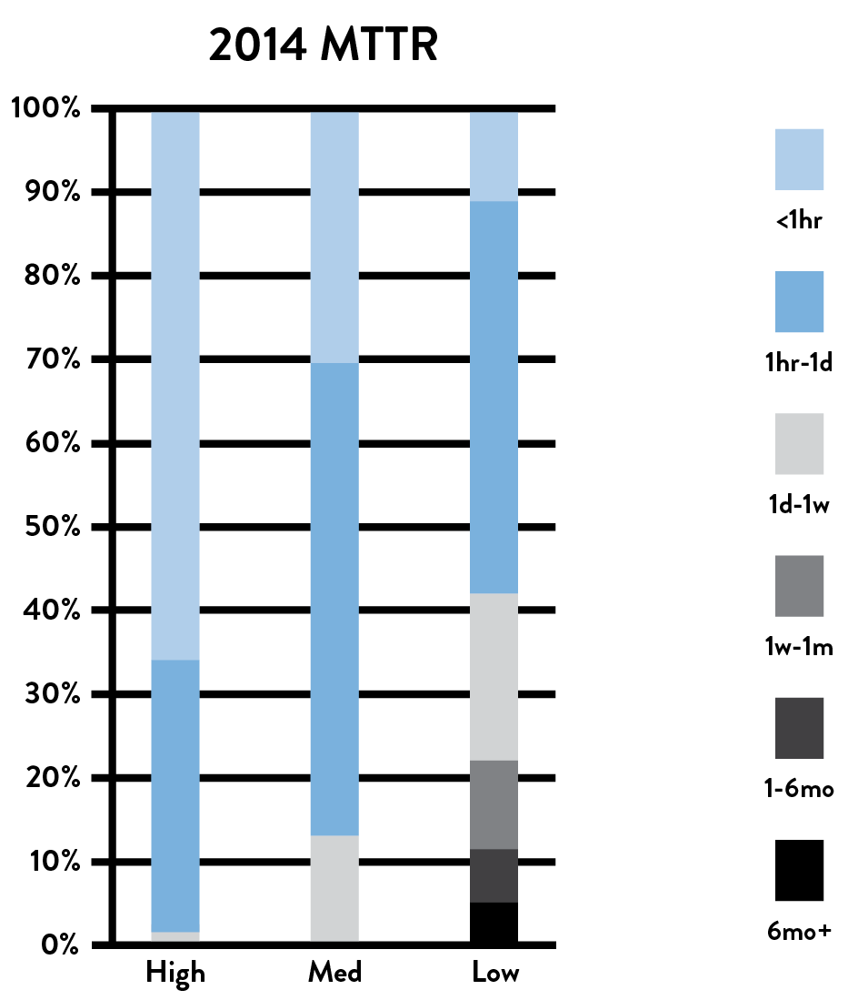
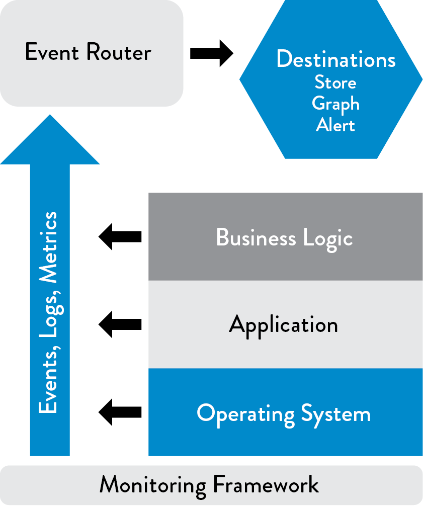
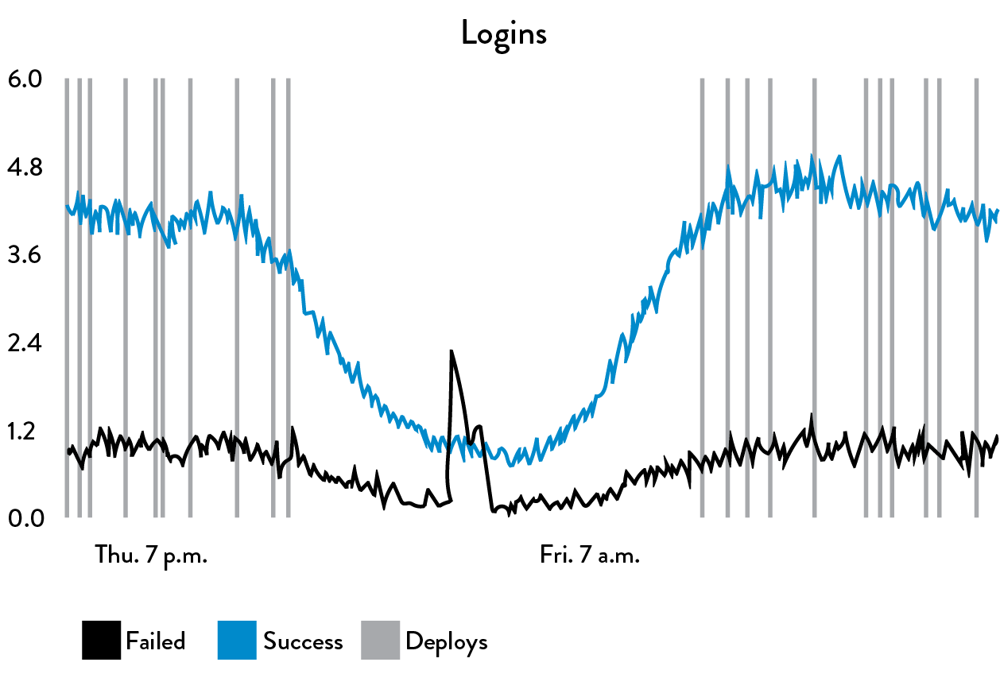
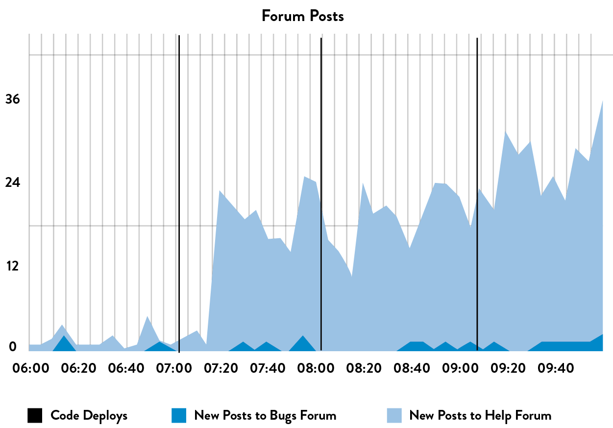

14Create Telemetry to Enable Seeing and Solving Problems
A fact of life in Operations is that things go wrong—small changes may result in many unexpected outcomes, including outages and global failures that impact all our customers. This is the reality of operating complex systems; no single person can see the whole system and understand how all the pieces fit together.
When production outages and other problems occur in our daily work, we don’t often have the information we need to solve the problem. For example, during an outage we may not be able to determine whether the issue is due to a failure in our application (e.g., defect in the code), in our environment (e.g., a networking problem, server configuration problem), or something entirely external to us (e.g., a massive denial of service attack).
In Operations, we may deal with this problem with the following rule of thumb: When something goes wrong in production, we just reboot the server. If that doesn’t work, reboot the server next to it. If that doesn’t work, reboot all the servers. If that doesn’t work, blame the developers, they’re always causing outages.
In contrast, the Microsoft Operations Framework (MOF) study in 2001 found that organizations with the highest service levels rebooted their servers twenty times less frequently than average and had five times fewer “blue screens of death.” In other words, they found that the best-performing organizations were much better at diagnosing and fixing service incidents, in what Kevin Behr, Gene Kim, and George Spafford called a “culture of causality” in The Visible Ops Handbook. High performers used a disciplined approach to solving problems, using production telemetry to understand possible contributing factors to focus their problem solving, as opposed to lower performers who would blindly reboot servers.
To enable this disciplined problem-solving behavior, we need to design our systems so that they are continually creating telemetry, widely defined as “an automated communications process by which measurements and other data are collected at remote points and are subsequently transmitted to receiving equipment for monitoring.” Our goal is to create telemetry within our applications and environments, both in our production and pre-production environments as well as in our deployment pipeline.
Michael Rembetsy and Patrick McDonnell described how production monitoring was a critical part of Etsy’s DevOps transformation that started in 2009. This was because they were standardizing and transitioning their entire technology stack to the LAMP stack (Linux, Apache, MySQL, and PHP), abandoning a myriad of different technologies being used in production that were increasingly difficult to support.
At the 2012 Velocity Conference, McDonnell described how much risk this created, “We were changing some of our most critical infrastructure, which, ideally, customers would never notice. However, they’d definitely notice if we screwed something up. We needed more metrics to give us confidence that we weren’t actually breaking things while we were doing these big changes, both for our engineering teams and for team members in the non-technical areas, such as marketing.”
McDonnell explained further, “We started collecting all our server information in a tool called Ganglia, displaying all the information into Graphite, an open source tool we invested heavily into. We started aggregating metrics together, everything from business metrics to deployments. This is when we modified Graphite with what we called ‘our unparalleled and unmatched vertical line technology’ that overlaid onto every metric graph when deployments happened. By doing this, we could more quickly see any unintended deployment side effects. We even started putting TV screens all around the office so that everyone could see how our services were performing.”
By enabling developers to add telemetry to their features as part of their daily work, they created enough telemetry to help make deployments safe. By 2011, Etsy was tracking over two hundred thousand production metrics at every layer of the application stack (e.g., application features, application health, database, operating system, storage, networking, security, etc.) with the top thirty most important business metrics prominently displayed on their “deploy dashboard.” By 2014, they were tracking over eight hundred thousand metrics, showing their relentless goal of instrumenting everything and making it easy for engineers to do so.
As Ian Malpass, an engineer at Etsy, quipped, “If Engineering at Etsy has a religion, it’s the Church of Graphs. If it moves, we track it. Sometimes we’ll draw a graph of something that isn’t moving yet, just in case it decides to make a run for it….Tracking everything is key to moving fast, but the only way to do it is to make tracking anything easy....We enable engineers to track what they need to track, at the drop of a hat, without requiring time-sucking configuration changes or complicated processes.”
One of the findings of the 2015 State of DevOps Report was that high performers could resolve production incidents 168 times faster than their peers, with the median high performer having a MTTR measured in minutes, while the median low performer had an MTTR measured in days. The top two technical practices that enabled fast MTTR were the use of version control by Operations and having telemetry and proactive monitoring in the production environment.

Figure 25: Incident resolution time for high, medium, and low performers
(Source: Puppet Labs, 2014 State of DevOps Report.)
As was created at Etsy, our goal in this chapter is to ensure that we always have enough telemetry so that we can confirm that our services are correctly operating in production. And when problems do occur, make it possible to quickly determine what is going wrong and make informed decisions on how best to fix it, ideally long before customers are impacted. Furthermore, telemetry is what enables us to assemble our best understanding of reality and detect when our understanding of reality is incorrect.
CREATE OUR CENTRALIZED TELEMETRY INFRASTRUCTURE
Operational monitoring and logging is by no means new—multiple generations of Operations engineers have used and customized monitoring frameworks (e.g., HP OpenView, IBM Tivoli, and BMC Patrol/BladeLogic) to ensure the health of production systems. Data was typically collected through agents that ran on servers or through agent-less monitoring (e.g., SNMP traps or polling based monitors). There was often a graphical user interface (GUI) front end, and back-end reporting was often augmented through tools such as Crystal Reports.
Similarly, the practices of developing applications with effective logging and managing the resulting telemetry are not new—a variety of mature logging libraries exist for almost all programming languages.
However, for decades we have ended up with silos of information, where Development only creates logging events that are interesting to developers, and Operations only monitors whether the environments are up or down. As a result, when inopportune events occur, no one can determine why the entire system is not operating as designed or which specific component is failing, impeding our ability to bring our system back to a working state.
In order for us to see all problems as they occur, we must design and develop our applications and environments so that they generate sufficient telemetry, allowing us to understand how our system is behaving as a whole. When all levels of our application stack have monitoring and logging, we enable other important capabilities, such as graphing and visualizing our metrics, anomaly detection, proactive alerting and escalation, etc.
In The Art of Monitoring, James Turnbull describes a modern monitoring architecture, which has been developed and used by Operations engineers at web-scale companies (e.g., Google, Amazon, Facebook). The architecture often consisted of open source tools, such as Nagios and Zenoss, that were customized and deployed at a scale that was difficult to accomplish with licensed commercial software at the time. This architecture has the following components:
- Data collection at the business logic, application, and environments layer: In each of these layers, we are creating telemetry in the form of events, logs, and metrics. Logs may be stored in application-specific files on each server (e.g., /var/log/httpd-error.log), but preferably we want all our logs sent to a common service that enables easy centralization, rotation, and deletion. This is provided by most operating systems, such as syslog for Linux, the Event Log for Windows, etc. Furthermore, we gather metrics at all layers of the application stack to better understand how our system is behaving. At the operating system level, we can collect metrics such as CPU, memory, disk, or network usage over time using tools like collectd, Ganglia, etc. Other tools that collect performance information include AppDynamics, New Relic, and Pingdom.
- An event router responsible for storing our events and metrics: This capability potentially enables visualization, trending, alerting, anomaly detection, and so forth. By collecting, storing, and aggregating all our telemetry, we better enable further analysis and health checks. This is also where we store configurations related to our services (and their supporting applications and environments) and is likely where we do threshold-based alerting and health checks.†
Once we have centralized our logs, we can transform them into metrics by counting them in the event router—for example, a log event such as “child pid 14024 exit signal Segmentation fault” can be counted and summarized as a single segfault metric across our entire production infrastructure.
By transforming logs into metrics, we can now perform statistical operations on them, such as using anomaly detection to find outliers and variances even earlier in the problem cycle. For instance, we might configure our alerting to notify us if we went from “ten segfaults last week” to “thousands of segfaults in the last hour,” prompting us to investigate further.
In addition to collecting telemetry from our production services and environments, we must also collect telemetry from our deployment pipeline when important events occur, such as when our automated tests pass or fail and when we perform deployments to any environment. We should also collect telemetry on how long it takes us to execute our builds and tests. By doing this, we can detect conditions that could indicate problems, such as if the performance test or our build takes twice as long as normal, allowing us to find and fix errors before they go into production.

Figure 26: Monitoring framework (Source: Turnbull, The Art of Monitoring, Kindle edition, chap. 2.)
Furthermore, we should ensure that it is easy to enter and retrieve information from our telemetry infrastructure. Preferably, everything should be done through self-service APIs, as opposed to requiring people to open up tickets and wait to get reports.
Ideally, we will create telemetry that tells us exactly when anything of interest happens, as well as where and how. Our telemetry should also be suitable for manual and automated analysis and should be able to be analyzed without having the application that produced the logs on hand. As Adrian Cockcroft pointed out, “Monitoring is so important that our monitoring systems need to be more available and scalable than the systems being monitored.”
From here on, the term telemetry will be used interchangeably with metrics, which includes all event logging and metrics created by our services at all levels of our application stack and generated from all our production and pre-production environments, as well as from our deployment pipeline.
CREATE APPLICATION LOGGING TELEMETRY THAT HELPS PRODUCTION
Now that we have a centralized telemetry infrastructure, we must ensure that the applications we build and operate are creating sufficient telemetry. We do this by having Dev and Ops engineers create production telemetry as part of their daily work, both for new and existing services.
Scott Prugh, Chief Architect and Vice President of Development at CSG, said, “Every time NASA launches a rocket, it has millions of automated sensors reporting the status of every component of this valuable asset. And yet, we often don’t take the same care with software—we found that creating application and infrastructure telemetry to be one of the highest return investments we’ve made. In 2014, we created over one billion telemetry events per day, with over one hundred thousand code locations instrumented.”
In the applications we create and operate, every feature should be instrumented—if it was important enough for an engineer to implement, it is certainly important enough to generate enough production telemetry so that we can confirm that it is operating as designed and that the desired outcomes are being achieved.‡
Every member of our value stream will use telemetry in a variety of ways. For example, developers may temporarily create more telemetry in their application to better diagnose problems on their workstation, while Ops engineers may use telemetry to diagnose a production problem. In addition, Infosec and auditors may review the telemetry to confirm the effectiveness of a required control, and a product manager may use them to track business outcomes, feature usage, or conversion rates.
To support these various usage models, we have different logging levels, some of which may also trigger alerts, such as the following:
- DEBUG level: Information at this level is about anything that happens in the program, most often used during debugging. Often, debug logs are disabled in production but temporarily enabled during troubleshooting.
- INFO level: Information at this level consists of actions that are user-driven or system specific (e.g., “beginning credit card transaction”).
- WARN level: Information at this level tells us of conditions that could potentially become an error (e.g., a database call taking longer than some predefined time). These will likely initiate an alert and troubleshooting, while other logging messages may help us better understand what led to this condition.
- ERROR level: Information at this level focuses on error conditions (e.g., API call failures, internal error conditions).
- FATAL level: Information at this level tells us when we must terminate (e.g., a network daemon can’t bind a network socket).
Choosing the right logging level is important. Dan North, a former ThoughtWorks consultant who was involved in several projects in which the core continuous delivery concepts took shape, observes, “When deciding whether a message should be ERROR or WARN, imagine being woken up at 4 a.m. Low printer toner is not an ERROR.”
To help ensure that we have information relevant to the reliable and secure operations of our service, we should ensure that all potentially significant application events generate logging entries, including those provided on this list assembled by Anton A. Chuvakin, a research VP at Gartner’s GTP Security and Risk Management group:
- Authentication/authorization decisions (including logoff)
- System and data access
- System and application changes (especially privileged changes)
- Data changes, such as adding, editing, or deleting data
- Invalid input (possible malicious injection, threats, etc.)
- Resources (RAM, disk, CPU, bandwidth, or any other resource that has hard or soft limits)
- Health and availability
- Startups and shutdowns
- Faults and errors
- Circuit breaker trips
- Delays
- Backup success/failure
To make it easier to interpret and give meaning to all these log entries, we should (ideally) create logging hierarchical categories, such as for non-functional attributes (e.g., performance, security) and for attributes related to features (e.g., search, ranking).
USE TELEMETRY TO GUIDE PROBLEM SOLVING
As described in the beginning of this chapter, high performers use a disciplined approach to solving problems. This is in contrast to the more common practice of using rumor and hearsay, which can lead to the unfortunate metric of mean time until declared innocent—how quickly can we convince everyone else that we didn’t cause the outage.
When there is a culture of blame around outages and problems, groups may avoid documenting changes and displaying telemetry where everyone can see them to avoid being blamed for outages.
Other negative outcomes due to lack of public telemetry include a highly charged political atmosphere, the need to deflect accusations, and, worse, the inability to create institutional knowledge around how the incidents occurred and the learnings needed to prevent these errors from happening again in the future.§
In contrast, telemetry enables us to use the scientific method to formulate hypotheses about what is causing a particular problem and what is required to solve it. Examples of questions we can answer during problem resolution include:
- What evidence do we have from our monitoring that a problem is actually occurring?
- What are the relevant events and changes in our applications and environments that could have contributed to the problem?
- What hypotheses can we formulate to confirm the link between the proposed causes and effects?
- How can we prove which of these hypotheses are correct and successfully effect a fix?
The value of fact-based problem solving lies not only in significantly faster MTTR (and better customer outcomes), but also in its reinforcement of the perception of a win/win relationship between Development and Operations.
ENABLE CREATION OF PRODUCTION METRICS AS PART OF DAILY WORK
To enable everyone to be able to find and fix problems in their daily work, we need to enable everyone to create metrics in their daily work that can be easily created, displayed, and analyzed. To do this, we must create the infrastructure and libraries necessary to make it as easy as possible for anyone in Development or Operations to create telemetry for any functionality they build. In the ideal, it should be as easy as writing one line of code to create a new metric that shows up in a common dashboard where everyone in the value stream can see it.
This was the philosophy that guided the development of one of the most widely used metrics libraries, called StatsD, which was created and open-sourced at Etsy. As John Allspaw described, “We designed StatsD to prevent any developer from saying, ‘It’s too much of a hassle to instrument my code.’ Now they can do it with one line of code. It was important to us that for a developer, adding production telemetry didn’t feel as difficult as doing a database schema change.”
StatsD can generate timers and counters with one line of code (in Ruby, Perl, Python, Java, and other languages) and is often used in conjunction with Graphite or Grafana, which renders metric events into graphs and dashboards.
 Figure 27: One line of code to generate telemetry using StatsD and Graphite at Etsy (Source: Ian Malpass, “Measure Anything, Measure Everything.”)
Figure 27 above shows an example of how a single line of code creates a user login event (in this case, one line of PHP code: “StatsD::increment(“login.successes”)). The resulting graph shows the number of successful and failed logins per minute, and overlaid on the graph are vertical lines that represent a production deployment.
When we generate graphs of our telemetry, we will also overlay onto them when production changes occur, because we know that the significant majority of production issues are caused by production changes, which include code deployments. This is part of what allows us to have a high rate of change, while still preserving a safe system of work.
Alternative libraries to StatsD that allow developers to generate production telemetry can be easily aggregated and analyzed include JMX and codahale metrics. Other tools that create metrics invaluable for problem solving include New Relic, AppDynamics, and Dynatrace. Tools such as munin and collectd can be used to create similar functionality.¶
By generating production telemetry as part of our daily work, we create an ever-improving capability to not only see problems as they occur, but also to design our work so that problems in design and operations can be revealed, allowing an increasing number of metrics to be tracked, as we saw in the Etsy case study.
CREATE SELF-SERVICE ACCESS TO TELEMETRY AND INFORMATION RADIATORS
In the previous steps, we enabled Development and Operations to create and improve production telemetry as part of their daily work. In this step, our goal is to radiate this information to the rest of the organization, ensuring that anyone who wants information about any of the services we are running can get it without needing production system access or privileged accounts, or having to open up a ticket and wait for days for someone to configure the graph for them.
By making telemetry fast, easy to get, and sufficiently centralized, everyone in the value stream can share a common view of reality. Typically, this means that production metrics will be radiated on web pages generated by a centralized server, such as Graphite or any of the other technologies described in the previous section.
We want our production telemetry to be highly visible, which means putting it in central areas where Development and Operations work, thus allowing everyone who is interested to see how our services are performing. At a minimum, this includes everyone in our value stream, such as Development, Operations, Product Management, and Infosec.
This is often referred to as an information radiator, defined by the Agile Alliance as “the generic term for any of a number of handwritten, drawn, printed, or electronic displays which a team places in a highly visible location, so that all team members as well as passers-by can see the latest information at a glance: count of automated tests, velocity, incident reports, continuous integration status, and so on. This idea originated as part of the Toyota Production System.”
By putting information radiators in highly visible places, we promote responsibility among team members, actively demonstrating the following values:
- The team has nothing to hide from its visitors (customers, stakeholders, etc.)
- The team has nothing to hide from itself: it acknowledges and confronts problems
Now that we possess the infrastructure to create and radiate production telemetry to the entire organization, we may also choose to broadcast this information to our internal customers and even to our external customers. For example, we might do this by creating publicly-viewable service status pages so that customers can learn how the services they depend upon are performing.
Although there may be some resistance to providing this amount of transparency, Ernest Mueller describes the value of doing so:
One of the first actions I take when starting in an organization is to use information radiators to communicate issues and detail the changes we are making—this is usually extremely well-received by our business units, who were often left in the dark before. And for Development and Operations groups who must work together to deliver a service to others, we need that constant communication, information, and feedback.
We may even extend this transparency further—instead of trying to keep customer-impacting problems a secret, we can broadcast this information to our external customers. This demonstrates that we value transparency, thereby helping to build and earn customers’ trust.** See Appendix 10.
Case Study
Creating Self-Service Metrics at LinkedIn (2011)
As described in Part III, LinkedIn was created in 2003 to help users connect “to your network for better job opportunities.” By November 2015, LinkedIn had over 350 million members generating tens of thousands of requests per second, resulting in millions of queries per second on the LinkedIn back-end systems.
Prachi Gupta, Director of Engineering at LinkedIn, wrote in 2011 about the importance of production telemetry: “At LinkedIn, we emphasize making sure the site is up and our members have access to complete site functionality at all times. Fulfilling this commitment requires that we detect and respond to failures and bottlenecks as they start happening. That’s why we use these time-series graphs for site monitoring to detect and react to incidents within minutes...This monitoring technique has proven to be a great tool for engineers. It lets us move fast and buys us time to detect, triage, and fix problems.”
However, in 2010, even though there was an incredibly large volume of telemetry being generated, it was extremely difficult for engineers to get access to the data, let alone analyze it. Thus began Eric Wong’s summer intern project at LinkedIn, which turned into the production telemetry initiative that created InGraphs.
Wong wrote, “To get something as simple as CPU usage of all the hosts running a particular service, you would need to file a ticket and someone would spend 30 minutes putting it [a report] together.”
At the time, LinkedIn was using Zenoss to collect metrics, but as Wong explains, “Getting data from Zenoss required digging through a slow web interface, so I wrote some python scripts to help streamline the process. While there was still manual intervention in setting up metric collection, I was able to cut down the time spent navigating Zenoss’ interface.”
Over the course of the summer, he continued to add functionality to InGraphs so that engineers could see exactly what they wanted to see, adding the ability to make calculations across multiple datasets, view week-over-week trending to compare historical performance, and even define custom dashboards to pick exactly which metrics would be displayed on a single page.
In writing about the outcomes of adding functionality to InGraphs and the value of this capability, Gupta notes, “The effectiveness of our monitoring system was highlighted in an instant where our InGraphs monitoring functionality tied to a major web-mail provider started trending downwards and the provider realized they had a problem in their system only after we reached out to them!”
What started off as a summer internship project is now one of the most visible parts of LinkedIn operations. InGraphs has been so successful that the real-time graphs are featured prominently in the company’s engineering offices where visitors can’t fail to see them.
FIND AND FILL ANY TELEMETRY GAPS
We have now created the infrastructure necessary to quickly create production telemetry throughout our entire application stack and radiate it throughout our organization.
In this step, we will identify any gaps in our telemetry that impede our ability to quickly detect and resolve incidents—this is especially relevant if Dev and Ops currently have little (or no) telemetry. We will use this data later to better anticipate problems, as well as to enable everyone to gather the information they need to make better decisions to achieve organizational goals.
Achieving this requires that we create enough telemetry at all levels of the application stack for all our environments, as well as for the deployment pipelines that support them. We need metrics from the following levels:
- Business level: Examples include the number of sales transactions, revenue of sales transactions, user signups, churn rate, A/B testing results, etc.
- Application level: Examples include transaction times, user response times, application faults, etc.
- Infrastructure level (e.g., database, operating system, networking, storage): Examples include web server traffic, CPU load, disk usage, etc.
- Client software level (e.g., JavaScript on the client browser, mobile application): Examples include application errors and crashes, user measured transaction times, etc.
- Deployment pipeline level: Examples include build pipeline status (e.g., red or green for our various automated test suites), change deployment lead times, deployment frequencies, test environment promotions, and environment status.
By having telemetry coverage in all of these areas, we will be able to see the health of everything that our service relies upon, using data and facts instead of rumors, finger-pointing, blame, and so forth.
Further, we better enable detection of security-relevant events by monitoring any application and infrastructure faults (e.g., abnormal program terminations, application errors and exceptions, and server and storage errors). Not only does this telemetry better inform Development and Operations when our services are crashing, but these errors are often indicators that a security vulnerability is being actively exploited.
By detecting and correcting problems earlier, we can fix them while they are small and easy to fix, with fewer customers impacted. Furthermore, after every production incident, we should identify any missing telemetry that could have enabled faster detection and recovery; or, better yet, we can identify these gaps during feature development in our peer review process.
APPLICATION AND BUSINESS METRICS
At the application level, our goal is to ensure that we are generating telemetry not only around application health (e.g., memory usage, transaction counts, etc.), but also to measure to what extent we are achieving our organizational goals (e.g., number of new users, user login events, user session lengths, percent of users active, how often certain features are being used, and so forth).
For example, if we have a service that is supporting e-commerce, we want to ensure that we have telemetry around all of the user events that lead up to a successful transaction that generates revenue. We can then instrument all the user actions that are required for our desired customer outcomes.
These metrics will vary according to different domains and organizational goals. For instance, for e-commerce sites, we may want to maximize the time spent on the site; however, for search engines, we may want to reduce the time spent on the site, since long sessions may indicate that users are having difficulty finding what they’re looking for.
In general, business metrics will be part of a customer acquisition funnel, which is the theoretical steps a potential customer will take to make a purchase. For instance, in an e-commerce site, the measurable journey events include total time on site, product link clicks, shopping cart adds, and completed orders.
Ed Blankenship, Senior Product Manager for Microsoft Visual Studio Team Services, describes, “Often, feature teams will define their goals in an acquisition funnel, with the goal of their feature being used in every customer’s daily work. Sometimes they’re informally described as ‘tire kickers,’ ‘active users,’ ‘engaged users,’ and ‘deeply engaged users,’ with telemetry supporting each stage.”
Our goal is to have every business metric be actionable—these top metrics should help inform how to change our product and be amenable to experimentation and A/B testing. When metrics aren’t actionable, they are likely vanity metrics that provide little useful information—these we want to store, but likely not display, let alone alert on.
Ideally, anyone viewing our information radiators will be able to make sense of the information we are showing in the context of desired organizational outcomes, such as goals around revenue, user attainment, conversion rates, etc. We should define and link each metric to a business outcome metric at the earliest stages of feature definition and development, and measure the outcomes after we deploy them in production. Furthermore, doing this helps product owners describe the business context of each feature for everyone in the value stream.
 Figure 28: Amount of user excitement of new features in user forum posts after deployments (Source: Mike Brittain, “Tracking Every Release,” CodeasCraft.com, December 8, 2010, https://codeascraft.com/2010/12/08/track-every-release/.)
Further business context can be created by being aware of and visually displaying time periods relevant to high-level business planning and operations, such as high transaction periods associated with peak holiday selling seasons, end-of-quarter financial close periods, or scheduled compliance audits. This information may be used as a reminder to avoid scheduling risky changes when availability is critical or avoid certain activities when audits are in progress.
By radiating how customers interact with what we build in the context of our goals, we enable fast feedback to feature teams so they can see whether the capabilities we are building are actually being used and to what extent they are achieving business goals. As a result, we reinforce the cultural expectations that instrumenting and analyzing customer usage is also a part of our daily work, so we better understand how our work contributes to our organizational goals.
INFRASTRUCTURE METRICS
Just as we did for application metrics, our goal for production and non-production infrastructure is to ensure that we are generating enough telemetry so that if a problem occurs in any environment, we can quickly determine whether infrastructure is a contributing cause of the problem. Furthermore, we must be able to pinpoint exactly what in the infrastructure is contributing to the problem (e.g., database, operating system, storage, networking, etc.).
We want to make as much infrastructure telemetry visible as possible, across all the technology stakeholders, ideally organized by service or application. In other words, when something goes wrong with something in our environment, we need to know exactly what applications and services could be or are being affected.††
In decades past, creating links between a service and the production infrastructure it depended on was often a manual effort (such as ITIL CMDBs or creating configuration definitions inside alerting tools in tools such as Nagios). However, increasingly these links are now registered automatically within our services, which are then dynamically discovered and used in production through tools such as Zookeeper, Etcd, Consul, etc.
These tools enable services to register themselves, storing information that other services need to interact with it (e.g., IP address, port numbers, URIs). This solves the manual nature of the ITIL CMDB and is absolutely necessary when services are made up of hundreds (or thousands or even millions) of nodes, each with dynamically assigned IP addresses.‡‡
Regardless of how simple or complex our services are, graphing our business metrics alongside our application and infrastructure metrics allow us to detect when things go wrong. For instance, we may see that new customer signups drop to 20% of daily norms, and then immediately also see that all our database queries are taking five times longer than normal, enabling us to focus our problem solving.
Furthermore, business metrics create context for our infrastructure metrics, enabling Development and Operations to better work together toward common goals. As Jody Mulkey, CTO of Ticketmaster/LiveNation, observes, “Instead of measuring Operations against the amount of downtime, I find it’s much better to measure both Dev and Ops against the real business consequences of downtime: how much revenue should we have attained, but didn’t.”§§
Note that in addition to monitoring our production services, we also need telemetry for those services in our pre-production environments (e.g., development, test, staging, etc.). Doing this enables us to find and fix issues before they go into production, such as detecting when we have ever-increasing database insert times due to a missing table index.
OVERLAYING OTHER RELEVANT INFORMATION ONTO OUR METRICS
Even after we have created our deployment pipeline that allows us to make small and frequent production changes, changes still inherently create risk. Operational side effects are not just outages, but also significant disruptions and deviations from standard operations.
To make changes visible, we make work visible by overlaying all production deployment activities on our graphs. For instance, for a service that handles a large number of inbound transactions, production changes can result in a significant settling period, where performance degrades substantially as all cache lookups miss.
To better understand and preserve quality of service, we want to understand how quickly performance returns to normal, and if necessary, take steps to improve performance.
Similarly, we want to overlay other useful operational activities, such as when the service is under maintenance or being backed up, in places where we may want to display or suppress alerts.
CONCLUSION
The improvements enabled by production telemetry from Etsy and LinkedIn show us how critical it is to see problems as they occur, so we can search out the cause and quickly remedy the situation. By having all elements of our service emitting telemetry that can be analyzed, whether it is in our application, database, or in our environment, and making that telemetry widely available, we can find and fix problems long before they cause something catastrophic, ideally long before a customer even notices that something is wrong. The result is not only happier customers, but, by reducing the amount of firefighting and crises when things go wrong, we have a happier and more productive workplace with less stress and lower levels of burnouts.

Table of contents
- Preface
- Foreword
- Imagine a World Where Dev and Ops Become DevOps
-
Part I The Three Ways
- A BRIEF HISTORY
- 1 Agile, Continuous Delivery, and the Three Ways
- 2 The First Way: The Principles of Flow
- 3 The Second Way: The Principles of Feedback
- 4 The Third Way: The Principles of Continual Learning and Experimentation
-
Part II Where to Start
- Introduction
- 5 Selecting Which Value Stream to Start With
- 6 Understanding the Work in Our Value Stream, Making it Visible, and Expanding it Across the Organization
-
7 How to Design Our Organization and Architecture with Conway’s Law in Mind
- ORGANIZATIONAL ARCHETYPES
- PROBLEMS OFTEN CAUSED BY OVERLY FUNCTIONAL ORIENTATION (“OPTIMIZING FOR COST”)
- ENABLE MARKET-ORIENTED TEAMS (“OPTIMIZING FOR SPEED”)
- MAKING FUNCTIONAL ORIENTATION WORK
- TESTING, OPERATIONS, AND SECURITY AS EVERYONE’S JOB, EVERY DAY
- ENABLE EVERY TEAM MEMBER TO BE A GENERALIST
- FUND NOT PROJECTS, BUT SERVICES AND PRODUCTS
- DESIGN TEAM BOUNDARIES IN ACCORDANCE WITH CONWAY’S LAW
- CREATE LOOSELY-COUPLED ARCHITECTURES TO ENABLE DEVELOPER PRODUCTIVITY AND SAFETY
- CONCLUSION
- 8 How to Get Great Outcomes by Integrating Operations into the Daily Work of Development
-
PART III—THE FIRST WAY: THE TECHNICAL PRACTICES OF FLOW
- 9 Create the Foundations of Our Deployment Pipeline
-
10 Enable Fast and Reliable Automated Testing
- CONTINUOUSLY BUILD, TEST, AND INTEGRATE OUR CODE AND ENVIRONMENTS
-
BUILD A FAST AND RELIABLE AUTOMATED VALIDATION TEST SUITE
- CATCH ERRORS AS EARLY IN OUR AUTOMATED TESTING AS POSSIBLE
- ENSURE TESTS RUN QUICKLY (IN PARALLEL, IF NECESSARY)
- WRITE OUR AUTOMATED TESTS BEFORE WE WRITE THE CODE (“TEST-DRIVEN DEVELOPMENT”)
- AUTOMATE AS MANY OF OUR MANUAL TESTS AS POSSIBLE
- INTEGRATE PERFORMANCE TESTING INTO OUR TEST SUITE
- INTEGRATE NON-FUNCTIONAL REQUIREMENTS TESTING INTO OUR TEST SUITE
- PULL OUR ANDON CORD WHEN THE DEPLOYMENT PIPELINE BREAKS
- CONCLUSION
- 11 Enable and Practice Continuous Integration
- 12 Automate and Enable Low-Risk Releases
- 13 Architect for Low-Risk Releases
-
PART IV—THE SECOND WAY: THE TECHNICAL PRACTICES OF FEEDBACK
- Introduction
-
14 Create Telemetry to Enable Seeing and Solving Problems
- CREATE OUR CENTRALIZED TELEMETRY INFRASTRUCTURE
- CREATE APPLICATION LOGGING TELEMETRY THAT HELPS PRODUCTION
- USE TELEMETRY TO GUIDE PROBLEM SOLVING
- ENABLE CREATION OF PRODUCTION METRICS AS PART OF DAILY WORK
- CREATE SELF-SERVICE ACCESS TO TELEMETRY AND INFORMATION RADIATORS
- FIND AND FILL ANY TELEMETRY GAPS
- CONCLUSION
- 15 Analyze Telemetry to Better Anticipate Problems and Achieve Goals
- 16 Enable Feedback So Development and Operations Can Safely Deploy Code
- 17 Integrate Hypothesis-Driven Development and A/B Testing into Our Daily Work
-
18 Create Review and Coordination Processes to Increase Quality of Our Current Work
- THE DANGERS OF CHANGE APPROVAL PROCESSES
- POTENTIAL DANGERS OF “OVERLY CONTROLLING CHANGES”
- ENABLE COORDINATION AND SCHEDULING OF CHANGES
- ENABLE PEER REVIEW OF CHANGES
- POTENTIAL DANGERS OF DOING MORE MANUAL TESTING AND CHANGE FREEZES
- ENABLE PAIR PROGRAMMING TO IMPROVE ALL OUR CHANGES
- FEARLESSLY CUT BUREAUCRATIC PROCESSES
- CONCLUSION
- PART IV CONCLUSION
-
PART V—THE THIRD WAY: THE TECHNICAL PRACTICES OF CONTINUAL LEARNING AND EXPERIMENTATION
- Introduction
-
19 Enable and Inject Learning into Daily Work
- ESTABLISH A JUST, LEARNING CULTURE
- SCHEDULE BLAMELESS POST-MORTEM MEETINGS AFTER ACCIDENTS OCCUR
- PUBLISH OUR POST-MORTEMS AS WIDELY AS POSSIBLE
- DECREASE INCIDENT TOLERANCES TO FIND EVER-WEAKER FAILURE SIGNALS
- REDEFINE FAILURE AND ENCOURAGE CALCULATED RISK-TAKING
- INJECT PRODUCTION FAILURES TO ENABLE RESILIENCE AND LEARNING
- INSTITUTE GAME DAYS TO REHEARSE FAILURES
- CONCLUSION
-
20 Convert Local Discoveries into Global Improvements
- USE CHAT ROOMS AND CHAT BOTS TO AUTOMATE AND CAPTURE ORGANIZATIONAL KNOWLEDGE
- AUTOMATE STANDARDIZED PROCESSES IN SOFTWARE FOR RE-USE
- CREATE A SINGLE, SHARED SOURCE CODE REPOSITORY FOR OUR ENTIRE ORGANIZATION
- SPREAD KNOWLEDGE BY USING AUTOMATED TESTS AS DOCUMENTATION AND COMMUNITIES OF PRACTICE
- DESIGN FOR OPERATIONS THROUGH CODIFIED NON-FUNCTIONAL REQUIREMENTS
- BUILD REUSABLE OPERATIONS USER STORIES INTO DEVELOPMENT
- ENSURE TECHNOLOGY CHOICES HELP ACHIEVE ORGANIZATIONAL GOALS
- CONCLUSION
- 21 Reserve Time to Create Organizational Learning and Improvement
-
22 Information Security as Everyone’s Job, Every Day
- INTEGRATE SECURITY INTO DEVELOPMENT ITERATION DEMONSTRATIONS
- INTEGRATE SECURITY INTO DEFECT TRACKING AND POST-MORTEMS
- INTEGRATE PREVENTIVE SECURITY CONTROLS INTO SHARED SOURCE CODE REPOSITORIES AND SHARED SERVICES
- INTEGRATE SECURITY INTO OUR DEPLOYMENT PIPELINE
- ENSURE SECURITY OF THE APPLICATION
- ENSURE SECURITY OF OUR SOFTWARE SUPPLY CHAIN
- ENSURE SECURITY OF THE ENVIRONMENT
- INTEGRATE INFORMATION SECURITY INTO PRODUCTION TELEMETRY
- CREATING SECURITY TELEMETRY IN OUR APPLICATIONS
- CREATING SECURITY TELEMETRY IN OUR ENVIRONMENT
- PROTECT OUR DEPLOYMENT PIPELINE
- CONCLUSION
-
23 Protecting the Deployment Pipeline
- INTEGRATE SECURITY AND COMPLIANCE INTO CHANGE APPROVAL PROCESSES
- RE-CATEGORIZE THE MAJORITY OF OUR LOWER RISK CHANGES AS STANDARD CHANGES
- WHAT TO DO WHEN CHANGES ARE CATEGORIZED AS NORMAL CHANGES
- REDUCE RELIANCE ON SEPARATION OF DUTY
- ENSURE DOCUMENTATION AND PROOF FOR AUDITORS AND COMPLIANCE OFFICERS
- CONCLUSION
- PART VI CONCLUSION
- A Call to Action
-
Appendices
- APPENDIX 1 THE CONVERGENCE OF DEVOPS
- APPENDIX 2 THEORY OF CONSTRAINTS AND CORE, CHRONIC CONFLICTS
- APPENDIX 3 TABULAR FORM OF DOWNWARD SPIRAL
- APPENDIX 4 THE DANGERS OF HANDOFFS AND QUEUES
- APPENDIX 5 MYTHS OF INDUSTRIAL SAFETY
- APPENDIX 6 THE TOYOTA ANDON CORD
- APPENDIX 7 COTS SOFTWARE
- APPENDIX 8 POST-MORTEM MEETINGS
- APPENDIX 9 THE SIMIAN ARMY
- APPENDIX 10 TRANSPARENT UPTIME
- Additional Resources
- Endnotes
- Index
- Acknowledgments
- Author Biographies